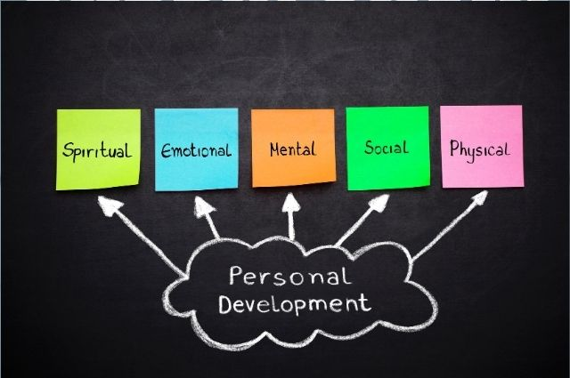

Personality is something that people tend to think a lot about. When we meet new people, whether through work, school, or social events, it is often their personality on which we immediately focus. Whether they are nice, helpful, outgoing, or shy are just a few of the things that we assess as we evaluate the people around us.
It is our personality that makes us who we are, but how exactly do our personalities form? Personality development has been a major topic of interest for some of the most prominent thinkers in psychology. Since the inception of psychology as a separate science, researchers have proposed a variety of ideas to explain how and why personality develops.
Personality development refers to how the organized patterns of behavior that make up each person's unique personality emerge over time. Many factors go into influencing personality, including genetics, environment, parenting, and societal variables. Perhaps most importantly, it is the ongoing interaction of all of these influences that continue to shape personality over time.
Our personalities make us unique, but how does personality develop? How exactly do we become who we are today? What factors play the most important role in the formation of personality? Can personality ever change?
To answer this question, many prominent theorists developed theories to describe various steps and stages that occur on the road of personality development. The following theories focus on various aspects of personality development, including cognitive, social, and moral development.
In addition to being one of the best-known thinkers in the area of personality development, Sigmund Freud remains one of the most controversial. In his well-known stage theory of psychosexual development, Freud suggested that personality develops in stages that are related to specific erogenous zones. Failure to complete these stages, he suggested, would lead to personality problems in adulthood.
Freud not only theorized about how personality developed over the course of childhood, but he also developed a framework for how overall personality is structured. According to Freud, the basic driving force of personality and behavior is known as the libido. This libidinal energy fuels the three components that make up personality: the id, the ego, and the superego.